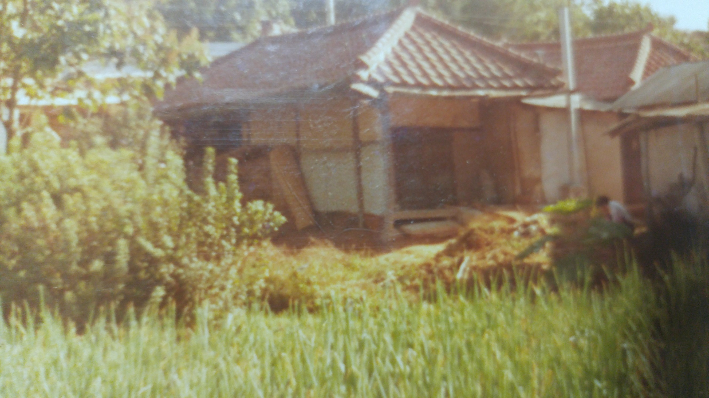
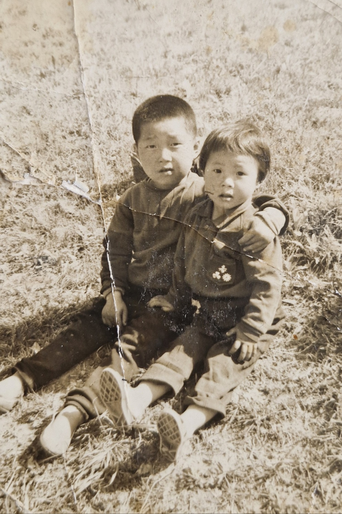
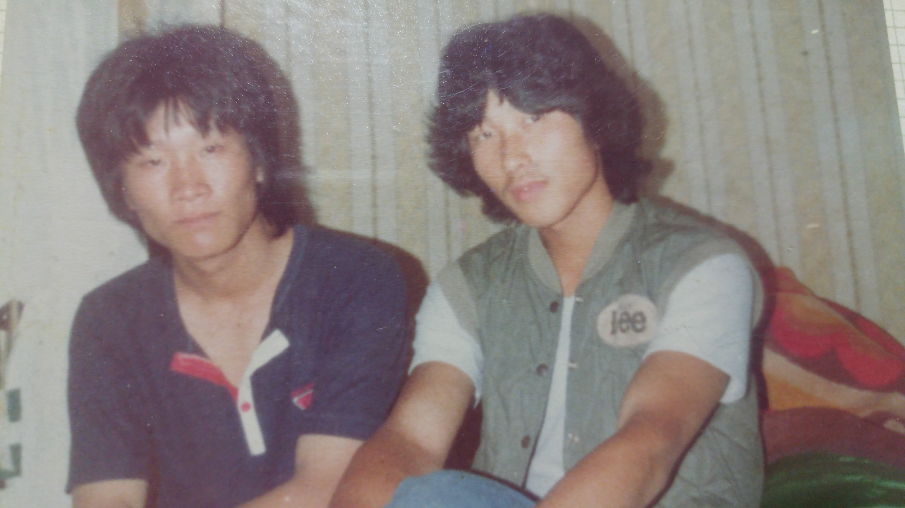
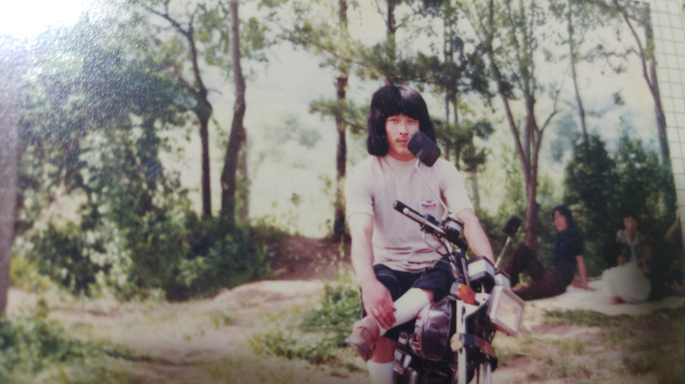
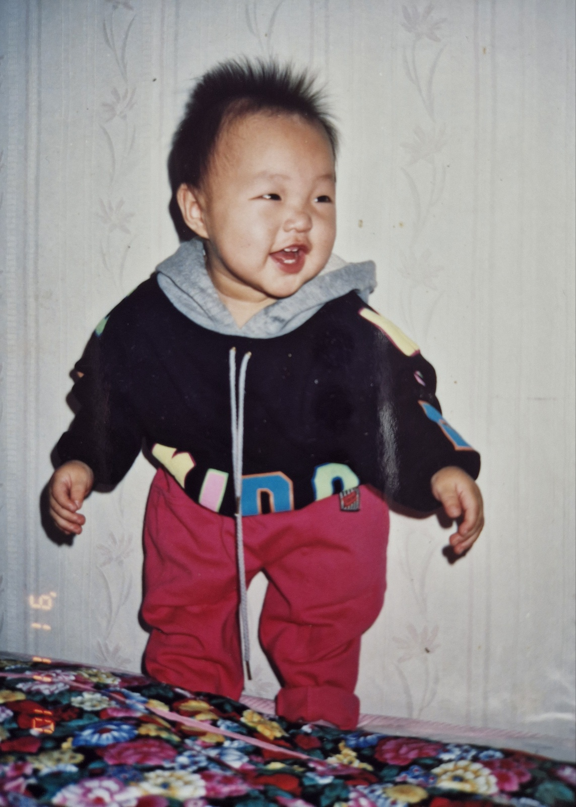
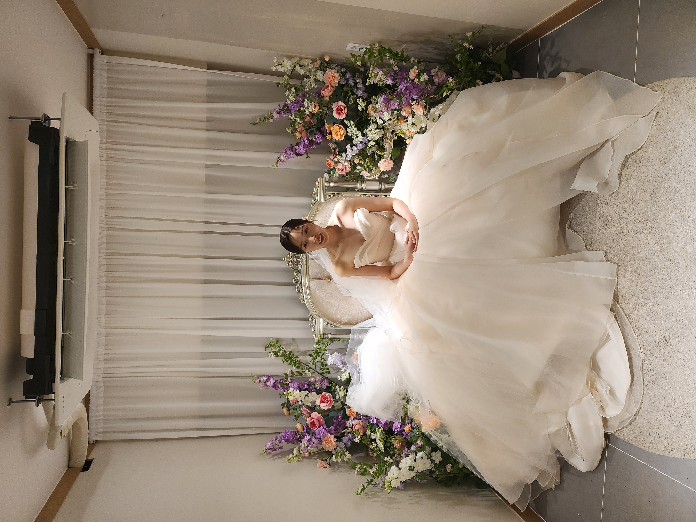
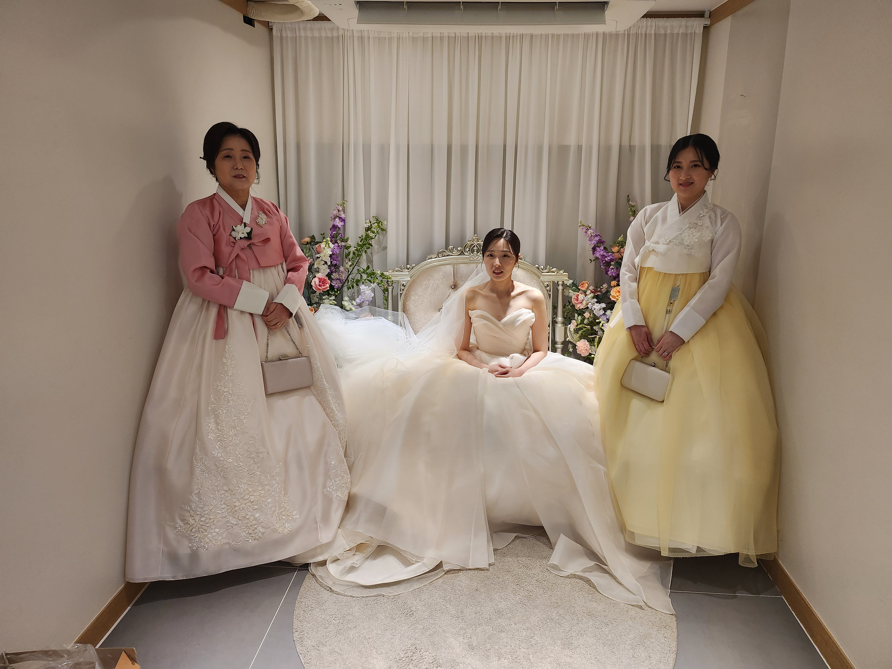
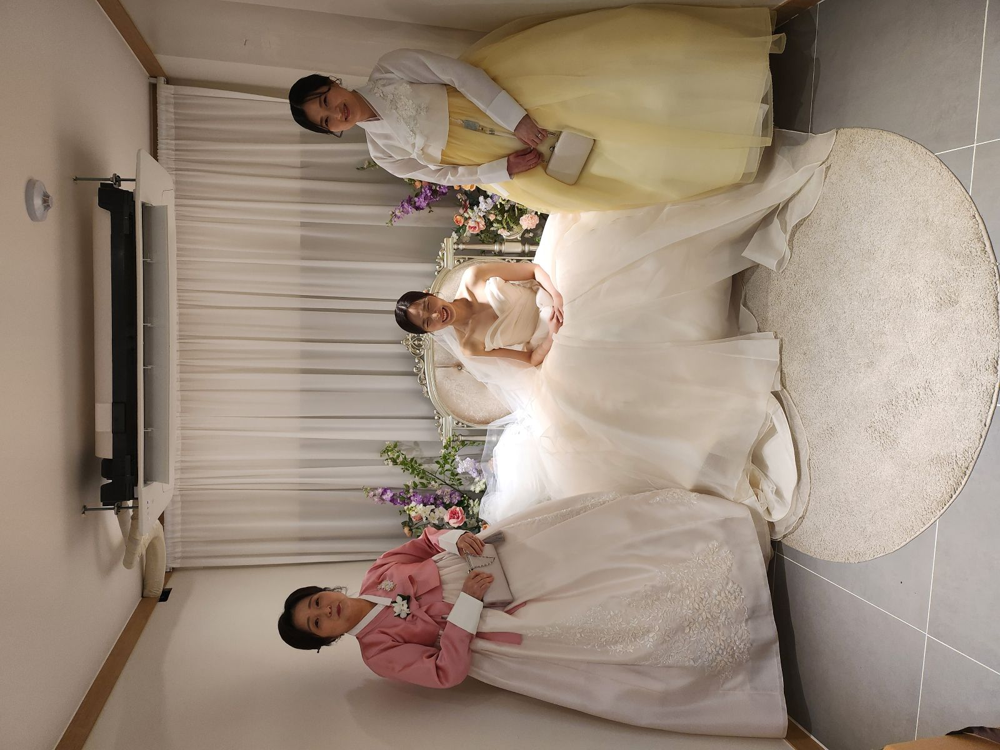
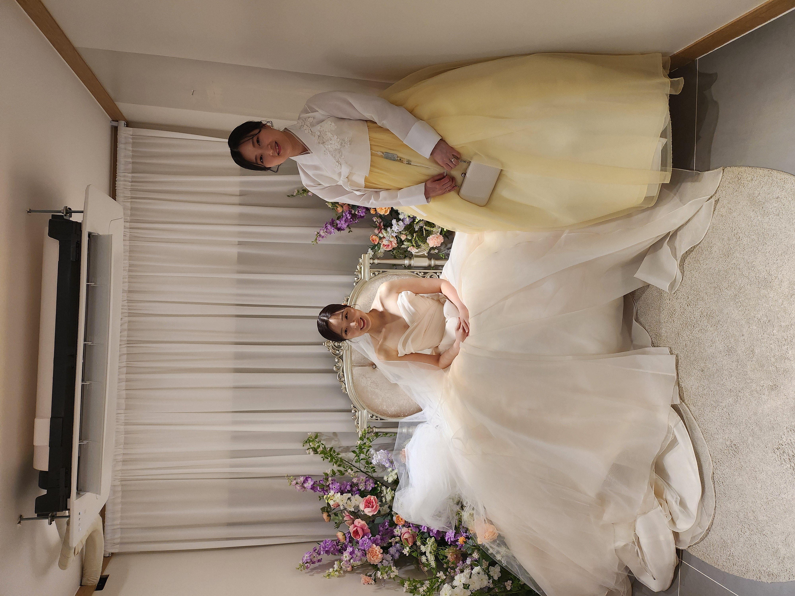

추억의 사진 앨범

고향의 옛집
1960~1970년대
어릴 적 살던 시골집 풍경, 자연과 가족의 뿌리

아기 시절
1962~1963년
갓난아기 조병일의 소중한 첫 사진

형제와 함께한 유년 시절
1965~1967년
들판에서 어린 형제와 함께, 순수했던 시절

학창시절
1978년대 중후반
교복 입고 추억을 남긴 소년

친구와의 청춘
1980~1982년대
젊은 날, 친구와 함께한 즐거운 시간

바이크와 자유
1982년대
자연 속에서 바이크를 타며 자유를 만끽하던 시절

젊은 시절, 사랑과 여행
1990년 전후
아내와 함께한 젊은 시절, 신혼 여행의 추억

웃음 가득한 아기 시절
1995년대 초
조아롱, 해맑게 웃던 아기 시절의 추억

철길 위 동심
1996년대
조아롱, 동생과 함께 철길 위를 달리던 어린 시절
한복 입은 어린 시절
1998년대
조아롱, 고운 한복을 입고 남긴 소중한 순간

웨딩드레스, 새로운 시작
2024년대
조아롱, 결혼식장에서 드레스를 입고

가족과 함께한 결혼식
2024년대
조아롱, 엄마와 동생과 함께 기념 촬영

세 여자의 기념 촬영
2024년대
조아롱, 엄마와 동생과 특별한 날의 사진

자매와 함께
2024년대
조아롱, 동생과 나란히 선 결혼식의 순간
푸른 산의 신혼여행
2024년
맑은 날, 눈 덮인 알프스와 함께한 여행의 미소

귀여운 아기, 이유하 손녀딸
2025년
화사한 집에서 탐험하는 귀여운 아기의 한 컷